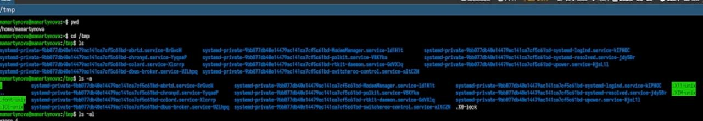
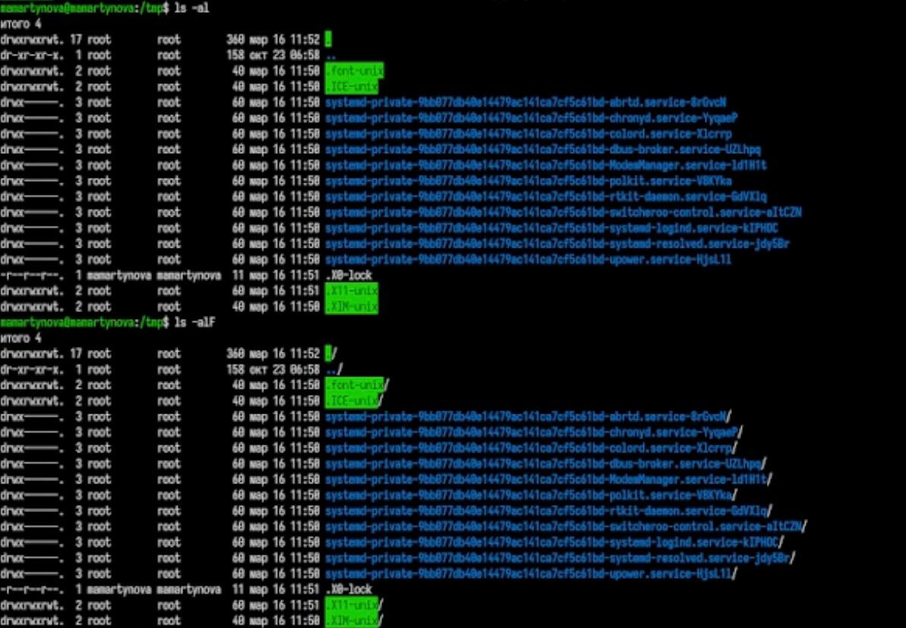
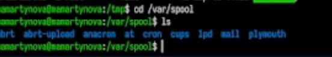
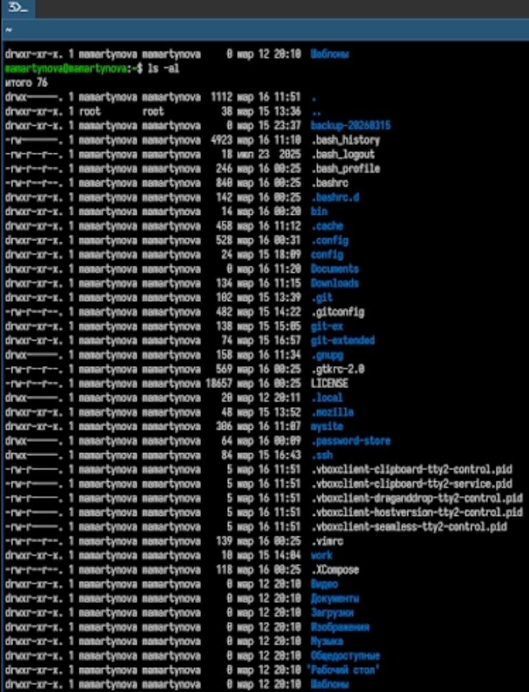
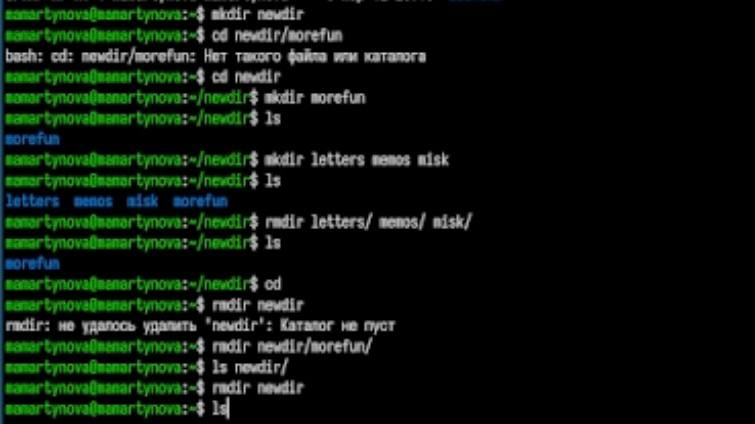
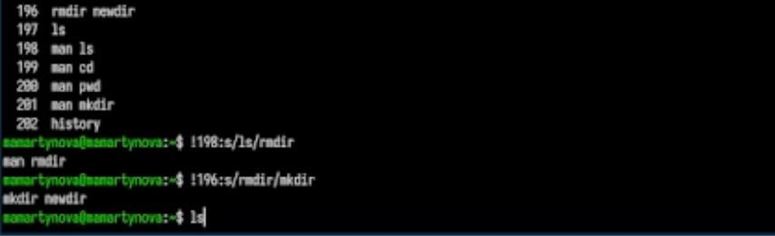

Получение практических навыков работы в командной строке.
2. Задание
Определите полное имя вашего домашнего каталога. Далее относительно
этого ката- лога будут выполняться последующие упражнения.
Выполните следующие действия:
Перейдите в каталог /tmp.
Выведите на экран содержимое каталога /tmp. Для этого используйте
команду ls с различными опциями Поясните разницу в выводимой на экран
информации.
Определите, есть ли в каталоге /var/spool подкаталог с именем
cron?
Перейдите в Ваш домашний каталог и выведите на экран его содержимое.
Определите, кто является владельцем файлов и подкаталогов?
Выполните следующие действия:
В домашнем каталоге создайте новый каталог с именем newdir.
В каталоге ~/newdir создайте новый каталог с именем morefun.
В домашнем каталоге создайте одной командой три новых каталога с
именами letters, memos, misk. Затем удалите эти каталоги одной
командой.
Попробуйте удалить ранее созданный каталог ~/newdir командой rm.
Проверьте, был ли каталог удалён.
Удалите каталог ~/newdir/morefun из домашнего каталога. Проверьте,
был ли каталог удалён.
С помощью команды man определите, какую опцию команды ls нужно
использо- вать для просмотра содержимое не только указанного каталога,
но и подкаталогов, входящих в него.
С помощью команды man определите набор опций команды ls, позволяющий
отсорти- ровать по времени последнего изменения выводимый список
содержимого каталога с развёрнутым описанием файлов.
Используйте команду man для просмотра описания следующих команд: cd,
pwd, mkdir, rmdir, rm. Поясните основные опции этих команд.
Используя информацию, полученную при помощи команды history,
выполните мо- дификацию и исполнение нескольких команд из буфера
команд.
3. Теоретическое введение
В операционных системах семейства Linux взаимодействие пользователя с
системой реализуется через командную строку с использованием построчного
ввода. Основным инструментом при этом выступают командные интерпретаторы
(оболочки) языка shell, такие как /bin/sh, /bin/csh, /bin/ksh. Команда
представляет собой текст, составленный по определенным правилам (включая
аргументы), который служит указанием системе на выполнение той или иной
функции. Структура команды обычно предполагает, что первым элементом
указывается имя команды, а последующие элементы — аргументы или опции,
уточняющие ее действие. Обобщенный синтаксис команды можно выразить
следующим образом: <имя_команды><разделитель><аргументы>.
4. Выполнение лабораторной
работы
Вывожу путь к домашнему каталогу, смотрю содержимое каталога tmp.
(рис. 1)

Домашний католог: путь и
содержимое
С разными флагами использую команду ls. (рис. 2)

Использование команды ls
Проверяю, есть ли подкаталог cron в /var/spool. (рис. 3)

Каталог /var/spool
Проверяю права доступа в домашнем каталоге. (рис. 4)

Права доступа
Выполняю различные действия с папками. (рис. 5)

Действия с папками
Смотрю историю команд и изменяю некоторые.(рис. 6)

История команд, их
измененение
5. Выводы
В ходе работы были приобретены практические навыки работы с системой
посредством командной строки.